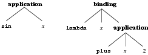

The OpenMath Society
S. Buswell,
O. Caprotti,
D. P. Carlisle,
M. C. Dewar,
M. Gäetano,
M. Kohlhase
June 2004
Abstract
This document describes version 2.0 of OpenMath: a standard for the representation and
communication of mathematical objects.
This version clarifies and extends OpenMath 1.1 [CON02]. OpenMath allows the meaning
of an object to be encoded rather than just a visual representation. It is designed to
allow the free exchange of mathematical objects between software systems and human
beings. On the worldwide web it is designed to allow mathematical expressions embedded
in web pages to be manipulated and computed with in a meaningful and correct way. It is
designed to be machine-generatable and machine-readable, rather than written by hand.
The OpenMath Standard is the official reference for the OpenMath language and has been approved by
the OpenMath Society. It is not intended as an introductory document or a user’s guide, for
the latest available material of this nature please consult the OpenMath web-site at
“urlhttp://www.openmath.org.
This document includes an overview of the OpenMath architecture, an abstract description of OpenMath objects and two mechanisms for producing concrete encodings of such objects. The first,
in XML, is designed primarily for use on the web, in documents, and for applications
which want to mix OpenMath as a content representation with MathML as a presentation format.
The second, a binary format, is designed for applications which wish to exchange very
large objects, or a lot of data as efficiently as possible. This document also includes a
description of Content Dictionaries - the mechanism by which the meaning of a symbol in
the OpenMath language is encoded, as well as an XML encoding for them. Finally it includes
guidelines for the development of OpenMath-compliant applications. Further background on OpenMath and guidelines for its use in applications may be found in the accompanying Primer
[CON04a].
This chapter briefly introduces OpenMath concepts and notions that are referred to in the rest
of this document.
1.1 OpenMath Architecture
Figure 1.1: The OpenMath Architecture
The architecture of OpenMath is described in 1.1 and summarizes the interactions among
the different OpenMath components. There are three layers of representation of a mathematical
object. The first is a private layer that is the internal representation used by an
application. The second is an abstract layer that is the representation as an OpenMath object.
Note that these two layers may, in some cases, be the same. The third is a communication
layer that translates the OpenMath object representation into a stream of bytes. An application
dependent program manipulates the mathematical objects using its internal representation,
it can convert them to OpenMath objects and communicate them by using the byte stream
representation of OpenMath objects.
1.2 OpenMath Objects and Encodings
OpenMath objects are representations of mathematical entities that
can be communicated among various software applications in a
meaningful way, that is, preserving their
“semantics”.
OpenMath objects and encodings are described in detail in 2 and 3.
The standard endorses two encodings in XML and binary
formats.
At the time of writing, these are the encodings
supported by most existing OpenMath tools and applications,
however they are not the only possible encodings of OpenMath objects. Users who wish to define their own encoding
, are free to
do so provided that there is
a well-defined correspondence
between the new encoding and the abstract model defined in 2.
1.3 Content Dictionaries
Content Dictionaries (CDs) are used to assign informal and formal
semantics to all symbols used in the OpenMath objects. They define the
symbols used to represent concepts arising in a particular area of
mathematics.
The Content Dictionaries are public, they represent the actual
common knowledge among OpenMath applications. Content Dictionaries fix
the “meaning” of objects independently of the
application. The application receiving the object may then recognize
whether or not, according to the semantics of the symbols defined in
the Content Dictionaries, the object can be transformed to the
corresponding internal representation used by the application.
1.4 Additional Files
Several additional files are related to Content Dictionaries. Signature Dictionaries
contain the signatures of symbols defined in some OpenMath Content Dictionary and their format
is endorsed by this standard.
Furthermore, the standard fixes how to define a specific set of Content Dictionaries as a
CDGroup.
Auxiliary files that define presentation and rendering or that are used for manipulating
and processing Content Dictionaries are not discussed by the standard.
1.5 Phrasebooks
The conversion of an OpenMath object to/from the internal representation in a software
application is performed by an interface program called a Phrasebook. The
translation is governed by the Content Dictionaries and the specifics of the
application. It is envisioned that a software application dealing with a specific area of
mathematics declares which Content Dictionaries it understands. As a consequence, it is
expected that the Phrasebook of the application is able to translate OpenMath objects built
using symbols from these Content Dictionaries to/from the internal mathematical objects of
the application.
OpenMath objects do not specify any computational behaviour, they merely represent mathematical
expressions. Part of the OpenMath philosophy is to leave it to the application to decide what
it does with an object once it has received it. OpenMath is not a query or programming
language. Because of this, OpenMath does not prescribe a way of forcing “evaluation”
or “simplification” of objects like or . Thus, the same object
could be transformed to by a computer algebra system, or displayed as by a
typesetting tool.
Chapter 2 OpenMath Objects
In this chapter we provide a self-contained description of OpenMath objects. We first do so by
means of an abstract grammar description (2.1) and then give a more informal
description (2.2).
2.1 Formal Definition of OpenMath Objects
OpenMath represents mathematical objects as terms or as labelled
trees that are called OpenMath objects or OpenMath expressions. The definition
of an abstract OpenMath object is then the following.
2.1.1 Basic OpenMath objects
Basic OpenMath Objects form the leaves of the OpenMath Object tree. A Basic OpenMath Object is of one of
the following.
(i)
Integer. Integers in the mathematical sense, with no predefined range. They
are “infinite precision” integers (also called “bignums” in computer
algebra).
(ii)
ieee floating point number. Double precision floating-point numbers
following the ieee 754-1985 standard [IEE85].
(iii)
Character string. A Unicode Character string. This also corresponds to
“characters” in XML.
(iv)
Bytearray. A sequence of bytes.
(v)
Symbol. A Symbol encodes three fields of information, a symbol name, a
Content Dictionary name, and (optionally) a Content Dictionary base URI,
The name of a symbol is a sequence of characters matching the regular expression
described in 2.3. The Content Dictionary is the location of the definition
of the symbol, consisting of a name (a sequence of characters matching the regular
expression described in 2.3) and, optionally, a unique prefix called a
cdbase which is used to disambiguate multiple Content Dictionaries of the same
name. There are other properties of the symbol that are not explicit in these fields
but whose values may be obtained by inspecting the Content Dictionary specified. These
include the symbol definition, formal properties and examples and, optionally, a
Role which is a restriction on where the symbol may appear in an OpenMath object. The
possible roles are described in 2.1.4.
(vi)
Variable. A Variable must have a name which is a sequence of
characters matching a regular expression, as described in 2.3.
2.1.2 Derived OpenMath Objects
Derived OpenMath objects are currently used as a way by which non-OpenMath data is embedded inside an OpenMath object.
A derived OpenMath object is built as follows:
(i)
If is not an OpenMath object, then is an OpenMath foreign object. An OpenMath foreign object may optionally have an encoding
field which describes how its contents should be interpreted.
2.1.3 OpenMath Objects
OpenMath objects are built recursively as follows.
(i)
Basic OpenMath objects are OpenMath objects.
(Note that derived OpenMath objects are
not OpenMath objects, but are used to construct OpenMath objects as described below.)
(ii)
If ,…, () are OpenMath objects, then
is an OpenMath application object.
(iii)
If ,…, are OpenMath objects, and is an OpenMath object, and If
,…, () are OpenMath objects or OpenMath derived objects, then
is an OpenMath attribution object. is the object stripped of attributions.
If ,…, are referred to as keys and ,…, as their
associated values. If, after recursively applying stripping to remove
attributions, the resulting un-attributed object is a variable, the original attributed
object is called an attributed variable.
(iv)
If and are OpenMath objects, and ,…, () are OpenMath variables or attributed
variables, then
is an OpenMath binding object.
(v)
If is an OpenMath symbol, and ,…, () are OpenMath objects or
OpenMath derived objects, then
is an OpenMath error object.
OpenMath objects that are contstructed via rules (ii) to (v) are jointly called compound
OpenMath objects
2.1.4 OpenMath Symbol Roles
We say that an OpenMath symbol is used to construct
an OpenMath object if it is the first child of an OpenMath application,
binding or error object, or an even-indexed child of an OpenMath attribution object (i.e. the key in a
(key, value) pair).
The role of an OpenMath symbol is a restriction
on how it may be used to construct a compound OpenMath object and, in the
case of the key in an attribution object, a clarification of how that
attribution should be interpreted. The possible roles are:
(i)
binder The symbol may appear as the first child of an OpenMath binding object.
(ii)
attribution The symbol may be used as key in an OpenMath attribution object,
i.e. as the first element of a (key, value) pair, or in an equivalent context (for
example to refer to the value of an attribution). This form of attribution may be
ignored by an application, so should be used for information which does not change the
meaning of the attributed OpenMath object.
(iii)
semantic-attribution This is the same as attribution except that it
modifies the meaning of the attributed OpenMath object and thus cannot be ignored by an
application, without changing the meaning.
(iv)
error The symbol may appear as the first child of an OpenMath error object.
(v)
application The symbol may appear as the first child of an OpenMath application
object.
(vi)
constant The symbol cannot be used to construct an OpenMath compound object.
A symbol cannot have more than one role and cannot be used to construct a compound OpenMath object in a way which requires a different role (using the definition of construct given
earlier in this section). This means that one cannot use a symbol which binds some
variables to construct, say, an application object. However it does not prevent the use
of that symbol as an argument in an application object (where by argument we mean a
child with index greater than 1).
If no role is indicated then the symbol can be used anywhere. Note that this is not the
same as saying that the symbol’s role is constant.
2.2 Further Description of OpenMath Objects
Informally, an OpenMath object can be
viewed as a tree and is also referred to as a term. The objects at
the leaves of OpenMath trees are called basic
objects. The basic objects supported by OpenMath are:
Integer
Arbitrary Precision
integers.
Float
OpenMath floats are ieee 754 Double precision floating-point
numbers. Other types of floating point number may be encoded in OpenMath by the use of
suitable content dictionaries.
Character strings
are sequences of characters. These characters come from the
Unicode standard [CON03a].
Bytearrays
are sequences of bytes. There is no “byte” in OpenMath as an object
of its own. However, a single byte can of course be represented by a bytearray of length
1. The difference between strings and bytearrays is the following: a character string
is a sequence of bytes with a fixed interpretation (as characters, Unicode texts may
require several bytes to code one character), whereas a bytearray is an uninterpreted
sequence of bytes with no intrinsic meaning. Bytearrays could be used inside OpenMath errors
to provide information to, for example, a debugger; they could also contain intermediate
results of calculations, or “handles” into computations or databases.
Symbols
are uniquely defined by the Content Dictionary in which they occur and by a
name. The form of these definitions is explained in 4. Each symbol has no
more than one definition in a Content Dictionary. Many Content Dictionaries may define
differently a symbol with the same name (e.g. the symbol union is defined
as associative-commutative set theoretic union in a Content Dictionary set1
but another Content Dictionary, multiset1 might define a symbol
union as the union of multi-sets).
Variables
are meant to denote parameters, variables or indeterminates (such as
bound variables of function definitions, variables in summations and integrals,
independent variables of derivatives).
Derived OpenMath objects are constructed from non-OpenMath data. They differ from bytearrays in
that they can have any structure. Currently there is only one way of making a derived OpenMath object.
Foreign
is used to import a non-OpenMath object into an OpenMath attribution. Examples of
its use could be to annotate a formula with a visual or aural rendering, an animation,
etc. They may also appear in OpenMath error objects, for example to allow an application to
report an error in processing such an object.
The four following constructs can be used to make compound OpenMath objects out of basic or
derived OpenMath objects.
Application
constructs an OpenMath object from a sequence of one or more OpenMath objects. The first child of an application is referred to as its “head” while
the remaining objects are called its “arguments”. An OpenMath application object
can be used to convey the mathematical notion of application of a function to a set of
arguments. For instance, suppose that the OpenMath symbol is defined in a suitable
Content Dictionary, then is the abstract OpenMath object
corresponding to . More generally, an OpenMath application object can be used as a
constructor to convey a mathematical object built from other objects such as a
polynomial constructed from a set of monomials. Constructors build inhabitants of some
symbolic type, for instance the type of rational numbers or the type of polynomials.
The rational number, usually denoted as , is
represented by the OpenMath application object . The symbol
must be defined, by a Content Dictionary, as a
constructor symbol for the rational numbers.

Figure 2.1: The OpenMath application and binding objects for in tree-like notation.
Binding
objects are
constructed from an OpenMath object, and from a sequence of zero or more
variables followed by another OpenMath object. The first OpenMath object is
the “binder” object. Arguments 2 to are always variables to
be bound in the “body” which is the argument object. It
is allowed to have no bound variables, but the binder object and the
body should be present. Binding can be used to express functions or
logical statements. The function , in which
the variable is bound by , corresponds to a binding object having
as binder the OpenMath symbol :
Phrasebooks are allowed to use -conversion in order to avoid clashes of
variable names. Suppose an object contains an occurrence of the object
. This object can be replaced in by
where is a variable not occurring free in and is obtained
from by replacing each free (i.e., not bound by any intermediate
construct) occurrence of by . This operation preserves the semantics of the object
. In the above example, a phrasebook is thus allowed to transform the object to,
e.g.
Repeated occurrences of the same variable in a binding operator
are allowed. An OpenMath application should treat a binding with
multiple occurrences of the same variable as equivalent to the
binding in which all but the last occurrence of each variable is
replaced by a new variable which does not occur free in the body of
the binding.
is semantically
equivalent to:
so that the resulting function is actually a constant in its first argument ( does
not occur free in the body .
Attribution
decorates an object with a sequence of one or more pairs made up of an
OpenMath symbol, the “attribute”, and an associated object, the “value of
the attribute”. The value of the attribute can be an OpenMath attribution object
itself. As an example of this, consider the OpenMath objects representing groups,
automorphism groups, and group dimensions. It is then possible to attribute an OpenMath object representing a group by its automorphism group, itself attributed by its
dimension.
OpenMath objects can be attributed with OpenMath foreign objects, which are containers for non-OpenMath structures. For example a mathematical expression could be attributed with its spoken
or visual rendering.
Composition of attributions, as in
is semantically equivalent to a single attribution, that is
The operation that produces an object with a single layer of attribution is called
flattening.
Multiple attributes with the same name are allowed. While the order of the given
attributes does not imply any notion of priority, potentially it could be significant. For
instance, consider the case in which () in the example above. Then, the
object is to be interpreted as if the value overwrites the value . (OpenMath however does not mandate that an application preserves the attributes or their order.)
Attribution acts as either adornment annotation or as semantical annotation. When the key
has role attribution, then replacement of the attributed object by the object
itself is not harmful and preserves the semantics. When the key has role
semantic-attribution then the attributed object is modified by the attribution and
cannot be viewed as semantically equivalent to the stripped object. If the attribute lacks
the role specification then attribution is acting as adornment annotation.
Objects can be decorated in a multitude of ways.
An example of the use of an adornment attribution would be to indicate the colour in which
an OpenMath object should be displayed, for example . Note that
both and are arbitary OpenMath objects whereas is a symbol. An example of
the use of a semantic attribution would be to indicate the type of an object. For example
the object represents the judgment stating that object has
type . Note that both and are arbitary OpenMath objects whereas is a symbol.
Error
is made up of an OpenMath symbol and a sequence of zero or more OpenMath objects. This
object has no direct mathematical meaning. Errors occur as the result of some treatment
on an OpenMath object and are thus of real interest only when some sort of communication is
taking place. Errors may occur inside other objects and also inside other errors. Error
objects might consist only of a symbol as in the object: .
2.3 Names
The names of symbols, variables and content dictionaries must conform to the production
Name specified in the following grammar (which is identical to that for XML names in XML 1.1, [CON04b]). Informally speaking, a name is a sequence of Unicode
[CON03a] characters which begins with a letter and cannot contain certain
punctuation and combining characters. The notation #x… represents the
hexadecimal value of the encoding of a Unicode character. Some of the character values or
code points in the following productions are currently unassigned, but this is
likely to change in the future as Unicode evolves 11 We note that in
XML 1 the name production explicitly listed the characters that were allowed, so all the
characters added in versions of Unicode after 2.0 (which amounted to tens of thousands
of characters) were not allowed in names.
A cdbase must conform to the grammar for URIs described in
[IETgu]. Note that if non-ASCII characters are
used in a CD or symbol name then when a URI for that symbol is
constructed it will be necessary to map the non-ASCII characters to a
sequence of octets. The precise mechanism for doing this depends on
the URI scheme.
Note on content dictionary names
It is a common convention to store a Content Dictionary in a file of
the same name, which can cause difficulties on many file systems. If
this convention is to be followed then OpenMath recommends that the name be restricted to the
subset of the above grammar which is a legal POSIX
[19] filename, namely:
Name
(PosixLetter |’_’) (Char)*
Char
PosixLetter |Digit|’.’|’-’|’_’
PosixLetter
’a’|’b’|…|’z’|’A’|’B’|…|’Z’
Canonical URIs for Symbols
To facilitate the use of OpenMath within a URI-based framework (such as RDF
[CON04d] or OWL [CON04c]), we provide the
following scheme for constructing a canonical URI
for an OpenMath Symbol:
OpenMath supports basic objects like integers, symbols, floating-point numbers, character
strings, bytearrays, and variables.
•
OpenMath compound objects are of four kinds: applications, bindings, errors, and
attributions.
•
OpenMath objects may be attributed with non-OpenMath objects via the use of foreign OpenMath objects.
•
OpenMath objects have the expressive power to cover all areas of computational
mathematics.
Observe that an OpenMath application object is viewed as a “tree” by software
applications that do not understand Content Dictionaries, whereas a Phrasebook that
understands the semantics of the symbols, as defined in the Content Dictionaries, should
interpret the object as functional application, constructor, or binding accordingly. Thus,
for example, for some applications, the OpenMath object corresponding to may result in a
command that writes .
Chapter 3 OpenMath Encodings
In this chapter, two encodings are defined that map between OpenMath objects and byte streams.
These byte streams constitute a low level representation that can be easily exchanged
between processes (via almost any communication method) or stored and retrieved from
files.
The first encoding is a character-based encoding in XML format. In previous versions of
the OpenMath Standard this encoding was a restricted subset of the full legal XML syntax. In
this version, however, we have removed all these restrictions so that the earlier encoding
is a strict subset of the existing one. The XML encoding can be used, for example, to
send OpenMath objects via e-mail, cut-and-paste, etc. and to embed OpenMath objects in XML documents or to have OpenMath objects processed by XML-aware applications.
The second encoding is a binary encoding that is meant to be used when the compactness of
the encoding is important (inter-process communications over a network is an example).
Note that these two encodings are sufficiently different for
auto-detection to be effective: an application reading the bytes can
very easily determine which encoding is used.
3.1 The XML Encoding
This encoding has been designed with two main goals in mind:
1.
to provide an encoding that uses common character sets (so that it can easily be
included in most documents and transport protocols) and that is both readable and
writable by a human.
2.
to provide an encoding that can be included (embedded) in XML documents or
processed by XML-aware applications.
3.1.1 A Schema for the XML Encoding
The XML encoding of an OpenMath object is defined by the Relax NG schema [SPEce] given
below. Relax NG has a number of advantages over the older XSD Schema format [CONy],
in particular it allows for tighter control of attributes and has a modular, extensible
structure. Although we have made the XML form, which is given in B,
normative, it is generated from the compact syntax given below. It is also very easy to
restrict the schema to allow a limited set of OpenMath symbols as described in
C.
Standard tools exist for generating a DTD or an XSD schema from a Relax NG Schema.
Examples of such documents are given in D, respectively.
Note: This schema specifies names as being of the xsd:NCName type. At
the time of writing, W3C Schema types are defined in terms of XML 1 [CON98]. This
limits the characters allowed in a name to a subset of the characters available in Unicode
2.0, which is far more restrictive than the definition for an OpenMath name given in
2.3. It is expected that W3C Schema types will be augmented to match the new
XML 1.1 recommendation [CON04b], but for portability reasons applications should
avoid using the new XML 1.1 name characters unless they are absolutely required. The XML
1.1 specification has a useful appendix giving advice on good strategies to use when
naming identifiers.
3.1.2 Informal description of the XML Encoding
An encoded OpenMath object is placed inside an OMOBJ element. This
element can contain the elements (and integers) described above.
It can take an optional
version (XML) attribute which indicates to
which version of the OpenMath standard it conforms. In previous versions of
this standard this attribute did not exist, so any OpenMath object without
such an attribute must conform to version 1 (or equivalently 1.1) of the
OpenMath standard. Objects which conform to the description given in this
document should have version=”2.0”.
We briefly discuss the XML encoding for each type of OpenMath object starting from the basic
objects.
Integers
are encoded using the
OMI element around the sequence of their
digits in base 10 or 16 (most significant digit first). White space
may be inserted between the characters of the integer representation,
this will be ignored. After ignoring white space, integers written in
base 10 match the regular expression
-?[0-9]+. Integers written in base 16 match
-?x[0-9A-F]+. The integer 10 can be thus
encoded as <OMI>10</OMI> or as
<OMI>xA</OMI> but neither
<OMI>+10</OMI> nor
<OMI>+xA</OMI> can be used.
The negative integer can be encoded
as either as decimal <OMI>-120</OMI> or as hexadecimal
<OMI>-x78</OMI>.
Symbols
are encoded using the OMS element. This element has three
(XML) attributes cd, name, and cdbase. The value
of cd is the name of the Content Dictionary in which the symbol is defined
and the value of name is the name of the symbol. The optional
cdbase attribute is a URI that can be used to disambiguate between two
content dictionaries with the same name. If a symbol does not have an explicit
cdbase attribute, then it inherits its cdbase from the first
ancestor in the XML tree with one, should such an element exist. In this document we
have tended to omit the cdbase for clarity.
is the encoding of the symbol named sin in the Content Dictionary named
transc1, which is part of the collection maintained by the OpenMath Society.
As described in 2.3, the three attributes of the OMS can be used
to build a URI reference for the symbol, for use in contexts where URI-based referencing
mechanisms are used. For example the URI for the above symbol is
“urlhttp://www.openmath.org/cd/transc1#sin.
Note that the role attribute described in 2.1.4 is contained in the Content
Dictionary and is not part of the encoding of a symbol, also the cdbase
attribute need not be explicit on each OMS as it is inherited from any
ancestor element.
Variables
are encoded using the OMV element, with only one (XML)
attribute, name, whose value is the variable name. For instance, the
encoding of the object representing the variable is: <OMVname=”x”/>
Floating-point numbers
are encoded using the OMF element that has
either the (XML) attribute dec or the (XML) attribute hex. The
two (XML) attributes cannot be present simultaneously. The value of dec is
the floating-point number expressed in base 10, using the common syntax:
The value of hex is a base 16 representation of the 64 bits of the
ieee Double. Thus the number represents mantissa, exponent, and sign from
lowest to highest bits using a least significant byte ordering. This consists of a string
of 16 digits -9, A-F.
For example, both <OMFdec=”1.0e-10”/> and
<OMFhex=”3DDB7CDFD9D7BDBB”/>
are valid representations of the floating point number .
The symbols INF, -INF and NaN represent positive and
negative infinity, and not a number as defined in [IEE85]. Note that
while infinities have a unique representation, it is possible for NaNs to contain extra
information about how they were generated and if this informations is to be preserved then
the hexadecimal representation must be used. For example
<OMFhex=”FFF8000000000000”/> and <OMFhex=”FFF8000000000001”/> are
both hexadecimal representations of NaNs.
Character strings
are encoded using the OMSTR element. Its
content is a Unicode text. Note that as always in XML the characters <> and
\& need to be represented by the entity references \<
and \& respectively.
Bytearrays
are encoded using the OMB element. Its content is
a sequence of characters that is a base64 encoding of the data. The base64 encoding is
defined in rfc 2045 [BF96a]. Basically, it represents an arbitrary
sequence of octets using 64 “digits” (A through Z,
a through z, through 9,
+ and /, in order of increasing value). Three octets are represented as
four digits (the = character is used for padding at the end of the
data). All line breaks and carriage return, space, form feed and horizontal tabulation
characters are ignored. The reader is referred to [BF96a] for more detailed
information.
Applications
are encoded using the OMA element. The
application whose head is the OpenMath object and whose arguments
are the OpenMath objects , …, is encoded as <OMA>
… </OMA> where is the encoding of
.
provided that the symbol sin is defined to be a function
symbol in a Content Dictionary named transc1.
Binding
is encoded using the OMBIND element. The binding by the OpenMath object of the OpenMath variables , ,…, in the object is encoded
as <OMBIND><OMBVAR> ,…,
</OMBVAR></OMBIND> where , , and are the
encodings of , and , respectively.
Binders are defined in Content Dictionaries, in particular,
the symbol lambda is defined in the Content Dictionary
fns1 for functions over functions.
Attributions
are encoded using the OMATTR element. If
the OpenMath object is attributed with (, ), …,
(, ) pairs (where are the attributes), it is encoded
as <OMATTR><OMATP> … </OMATP></OMATTR> where is the encoding of the
symbol , of the object and is the encoding of
.
Examples are the use of attribution to decorate a group by its
automorphism group:
A special use of attributions is to associate non-OpenMath data with an OpenMath object. This is
done using the OMFOREIGN element. The children of this element must be
well-formed XML. For example the attribution of the OpenMath object with its
representation in Presentation MathML is:
Of course not everything has a natural XML encoding in this way and
often the contents of a OMFOREIGN will just
be data or some kind of encoded string. For example the attribution
of the previous object with its LaTeX representation could be achieved
as follows:
For a discussion on the use of the encoding
attribute see 5.2.
Errors
are encoded using the OME element. The error whose symbol is
and whose arguments are the OpenMath objects or OpenMath derived objects , …, is
encoded as <OME> … </OME> where is
the encoding of and the encoding of .
If an aritherror Content Dictionary contained a DivisionByZero
symbol, then the object
would be encoded as follows:
Note that it is possible to embed fragments
of valid OpenMath inside an OMFOREIGN element but that it
cannot contain invalid OpenMath. In addition, the arguments to an
OMERROR must be well-formed XML. If an
application wishes to signal that the OpenMath it has received is invalid or
is not well-formed then the offending data must be encoded as a string.
For example:
Note that the “¡” and “¿” characters have been escaped as is usual in
an XML document.
References
OpenMath integers, floating point numbers, character strings, bytearrays,
applications, binding, attributions can also be encoded as an empty OMR
element with an href attribute whose value is the value of a URI referencing
an id attribute of an OpenMath object of that type. The OpenMath element represented by this
OMR reference is a copy of the OpenMath element referenced href
attribute. Note that this copy is structurally equal, but not identical to the
element referenced. These URI refererences will often be relative, in which case they
are resolved using the base URI of the document containing the OpenMath.
We say that an OpenMath element dominates all its children and all elements
they dominate. An OMR element dominates its target,
i.e. the element that carries the id attribute pointed to
by the xref attribute. For instance in the representation
in 3.1, the
OMA element with id=”t1” and
also the second OMR dominate the
OMA element with id=”t11”.
An Acyclicity Constraint
The occurrences of the OMR element must obey the following global
acyclicity constraint: An OpenMath element may not dominate itself.
Consider for instance the following (illegal) XML representation
Here, the OMA element with
id=”foo” dominates its third child, which dominates the
OMR element, which dominates its target: the element with
id=”foo”. So by transitivity, this element dominates itself, and
by the acyclicity constraint, it is not the XML representation of an OpenMath element. Even though it could be given the interpretation of the continued fraction
¡math display=”block”¿
¡mfrac¿
¡mn¿1¡/mn¿
¡mrow¿
¡mn¿1¡/mn¿
¡mo¿+¡/mo¿
¡mfrac¿
¡mn¿1¡/mn¿
¡mrow¿
¡mn¿1¡/mn¿
¡mo¿+¡/mo¿
¡mfrac¿¡mn¿1¡/mn¿¡mi¿…¡/mi¿¡/mfrac¿
¡/mrow¿
¡/mfrac¿
¡/mrow¿
¡/mfrac¿
¡/math¿ this would correspond to an infinite tree of applications,
which is not admitted by the structure of OpenMath objects described
in 2.
Note that the acyclicity constraints is not restricted
to such simple cases, as the example in 3.2
shows.
Figure 3.2: Sharing between OpenMath objects (A cycle of order 2).
Here, the OMA with
id=”bar” dominates its third child, the
OMR with xref=”baz”,
which dominates its target OMA with
id=”baz”, which in turn dominates its third
child, the OMR with
xref=”bar”, this finally dominates its
target, the original OMA element with
id=”bar”. So this pair of OpenMath objects
violates the acyclicity constraint and is not the XML representation of an OpenMath object.
Sharing and Bound Variables
Note that the OMR element is a syntactic referencing mechanism: an
OMR element stands for the exact XML element it points to. In particular,
referencing does not interact with binding in a semantically intuitive way, since it
allows for variable capture. Consider for instance the following XML representation:
which has two sub-terms of the form , one with id=”orig”
(the one explicitly represented) and one with id=”copy”, represented by the
OMR element. In the original, the variable is bound by the outerOMBIND element, and in the copy, the variable is bound by the innerOMBIND element. We say that the inner OMBIND has captured the
variable .
It is well-known that variable capture does not conserve semantics. For instance, we could
use -conversion to rename the inner occurrence of into, say, arriving at
the (same) object
Using references that capture variables in this way can easily lead to representation
errors, and is not recommended.
3.1.4 Embedding OpenMath in XML Documents
The above encoding of XML encoded OpenMath specifies the grammar to be used in files that
encode a single OpenMath object, and specifies the character streams that a conforming OpenMath application should be able to accept or produce.
When embedding XML encoded OpenMath objects into a larger XML document one may wish, or need,
to use other XML features. For example use of extra XML attributes to specify XML Namespaces [CON99] or xml:lang attributes to specify the language used
in strings [CON04b].
If such XML features are used then the XML application controlling the document must, if
passing the OpenMath fragment to an OpenMath application, remove any such extra attributes and must
ensure that the fragment is encoded according to the schema specified above.
3.2 The Binary Encoding
The binary encoding was essentially designed to be more compact than the XML encodings,
so that it can be more efficient if large amounts of data are involved. For the current
encoding, we tried to keep the right balance between compactness, speed of encoding and
decoding and simplicity (to allow a simple specification and easy implementations).
3.2.1 A Grammar for the Binary Encoding
start
[24] object [25]
[24+64] [] [] object [25]
object
basic
compound
cdbase
foreign
reference
basic
integer
float
variable
symbol
string
bytearray
integer
[1] [_]
[1+64] [] id: [_]
[1+32] [_]
[1+128]
[1+64+128] id:
[1+32+128]
[2] [] [_]digits:
[2+64] [] [] [_]digits: id:
[2+32] [] [_]digits:
[2+128] [_]digits:
[2+64+128] [_]digits: id:
[2+32+128] [_]digits:
float
[3]
[3+64] [] id:
[3+64+128] id:
variable
[5] [] varname:
[5+64] [] [] varname: id:
[5+128] varname:
[5+64+128] varname: id:
symbol
[8] [] [] cdname: symbname:
[8+64] [] [] [] cdname: symbname: id:
[8+128] cdname: symbname:
[8+64+128] cdname: symbname: id:
string
[6] [] bytes:
[6+64] [] bytes:
[6+32] [] bytes:
[6+128] bytes:
[6+64+128] bytes: id:
[6+32+128] bytes:
[7] [] bytes:
[7+64] [] []bytes:id:
[7+32] [] bytes:
[7+128] bytes:
[7+64+128] bytes: id:
[7+32+128] bytes:
bytearray
[4] [] bytes:
[4+64] [] [] bytes: id:
[4+32] [] bytes:
[4+128] bytes:
[4+64+128] bytes: id:
[4+32+128] bytes:
cdbase
[9] [] uri:
[9+128] uri:
foreign
[12] [] [] bytes: bytes:
[12+64] [] [] [] bytes: bytes: id:
[12+32] [] [] bytes: bytes:
[12+128] bytes: bytes:
[12+64+128] bytes: bytes: id:
[12+32+128] bytes: bytes:
compound
application
binding
attribution
error
application
[16] object objects [17]
[16+64] [] id: object objects [17]
[16+64+128] id: object objects [17]
binding
[26] object bvars object [27]
[26+64] [] id: object bvars object [27]
[26+64+128] id: object bvars object [27]
attribution
[18] attrpairs object [19]
[18+64] [] id: attrpairs object [19]
[18+64+128] id: attrpairs object [19]
error
[22] symbol objects [23]
[22+64] [] id: symbol objects [23]
[22+64+128] id: symbol objects [23]
attrpairs
[20] pairs [21]
[20+64] [] id: pairs [21]
[20+64+128] id: pairs [21]
pairs
symbol object
symbol object pairs
bvars
[28] vars [29]
[28+64] [] id: vars [29]
[28+64+128] id: vars [29]
vars
empty
attrvar vars
attrvar
variable
[18] attrpairs attrvar [19]
[18+64] [] id: attrpairs attrvar [19]
[18+64+128] id: attrpairs attrvar [19]
objects
empty
object objects
reference
internal_reference
external_reference
internal_reference
[30] [_]
[30+128]
external_reference
[31] [] uri:
[31+128] uri:
Figure 3.3: Grammar of the binary encoding of OpenMath objects.
3.3 gives a grammar for the binary encoding (“start” is the start
symbol).
The following conventions are used in this section: [] denotes a byte whose value is
the integer ( can range from 0 to 255), denotes four bytes representing the
(unsigned) integer in network byte order, [_]denotes an arbitrary byte, denotes
an arbitrary sequence of four bytes. Finally, empty stands for the empty list of
tokens.
xxxx:, where xxxx is one of symbname, cdname,
varname, uri, id, digits, or bytes denotes a sequence
of bytes that conforms to the constraints on xxxx strings. For instance, for
symbname, varname, or cdname this is the regular expression described
in 2.3, for uri it is the grammar for URIs in [IETgu].
3.2.2 Description of the Grammar
An OpenMath object is encoded as a sequence of bytes starting with the begin object tag (values
24 and 88) and ending with the end object tag (value 25). These are similar to the
<OMOBJ> and </OMOBJ> tags of the XML encoding. Objects with
start token [88] have two additional bytes and that characterize the version
() of the encoding directly after the start token. This is similar to
<OMOBJversion=”m.n”>.
The encoding of each kind of OpenMath object begins with a tag that is a single byte, holding a
token identifier that describes the kind of object, two flags, and a status
bit. The identifier is stored in the first five bits (1 to 5). Bit 6 is used as a
status bit which is currently only used for managing streaming of some basic
objects. Bits 7 and 8 are the sharing flag and the long flag. The sharing
flag indicates that the encoded object may be shared in another (part of an) object
somewhere else (see 3.2.4). Note that if the sharing flag is set
(in the right column of the grammar in 3.3, then the encoding includes a
representation of an identifier that serves as the target of a reference (internal with
token identifier 30 or external with token identifier 31). If the long flag is set, this
signifies that the names, strings, and data fields in the encoded OpenMath object are longer
than 255 bytes or characters.
The concept of structure sharing in OpenMath encodings and in particular the sharing bit in the
binary encoding has been introduced in OpenMath 2 (see section 3.2.4 for
details). The binary encoding in OpenMath 2 leaves the tokens with sharing flag 0 unchanged to
ensure OpenMath 1 compatibility. To make use of functionality like the version attribute on the
OpenMath object introduced in OpenMath 2, the tokens with sharing flag 1 should be used.
To facilitate the streaming of OpenMath objects, some basic objects (integers, strings,
bytearrays, and foreign objects) have variant token identifiers with the fifth bit
set. The idea behind this is that these basic objects can be split into packets. If the
fifth bit is not set, this packet is the final packet of the basic object. If the bit is
set, then more packets of the basic object will follow directly after this one. Note that
all packets making up a basic object must have the same token identifier (up to the fifth
bit). In 3.4 we have represented an integer that is split up into
three packets.
Here is a description of the binary encodings of every kind of OpenMath object:
Integers
are encoded depending on how large they
are. There are four possible formats. Integers between -128 and 127 are
encoded as the small integer tags (token
identifier 1) followed by a single byte that is the
value of the integer (interpreted as a signed character). For
example 16 is encoded as 0x010x10. Integers between
(-2147483648) and (2147483647) are encoded as
the small integer tag with the long flag set followed by the integer
encoded in little endian format in four bytes (network byte order:
the most significant byte comes first). For example, 128 is encoded
as 0x810x00000080. The most
general encoding begins
with the big integer tag (token identifier 2) with the long flag set
if the number of bytes in the encoding of the digits is greater or
equal than 256. It is followed by the length (in bytes) of the
sequence of digits, encoded on one byte (0 to 255, if the long flag
was not set) or four bytes (network byte order, if the long flag was
set). It is then followed by a byte describing the sign and the
base. This ’sign/base’ byte is +
(0x2B) or -
(0x2D) for the sign or-ed with the base mask bits
that can be for base 10
or 0x40 for base 16 or
0x80 for “base 256”. It is
followed by the
sequence of digits (as
characters for bases 10 and 16 as in the XML encoing, and as bytes for base 256) in their natural
order. For example, the decimal
number 8589934592
() is encoded as
Note that it is permitted to encode a “small” integer in any “bigger”
format.
To splice sequences of integer packets into integers, we have to consider three cases: In
the case of token identifiers 1, 33, and 65 the sequence of packets is treated as a
sequence of integer digits to the base of (most significant first). The case of
token identifiers 129, 161, and 193 is analogous with digits of base . In the case
of token identifiers 2, 34, 66, 130, 162, and 194 the integer is assembled by
concatenating the string of decimal digits in the packets in sequence order (which
corresponds to most significant first). Note that in all cases only the sequence-initial
packet may contain a signed integer. The sign of this packet determines the sign of the
overall integer.
Byte
Hex
Meaning
Byte
Hex
Meaning
1
22
begin streamed big integer tag
7
2B
sign + (disregarded)
2
FF
255 digits in packet
8
…
the 255 digits as characters
3
2B
sign +
9
2
begin final big integer tag
4
…
the 255 digits as characters
10
42
68 digits in packet
5
22
begin streamed big integer tag
11
2B
sign + (disregarded)
6
FF
255 digits in packet
12
…
the 68 digits as characters
Figure 3.4: Streaming a large Integer in the Binary Encoding.
Symbols
are encoded as the symbol tags (token identifier 8) with the long flag set
if the maximum of the length in bytes in the utf-8 encoding of the Content
Dictionary name or the symbol name is greater than or equal to 256. The symbol tag is
followed by the length in bytes in the utf-8 encoding of the Content
Dictionary name, the symbol name, and the id (if the shared bit was set) as
a byte (if the long flag was not set) or a four byte integer (in network byte
order). These are followed by the bytes of the utf-8 encoding of the Content
Dictionary name, the symbol name, and the id.
Variables
aare encoded using the variable tags (token identifiers 5) with the long
flag set if the number of bytes in the utf-8 encoding of the variable name is
greater than or equal to 256. Then, there is the number of characters as a byte (if the
long flag was not set) or a four byte integer (in network byte order), followed by the
characters of the name of the variable. For example, the variable x is encoded as
0x050x010x78.
Floating-point number
are encoded using the floating-point number tags (token
identifier 3) followed by eight bytes that are the IEEE 754
representation [IEE85], most significant bytes first. For example, 0.1 is
encoded as 0x030x000000000000f03f.
Character string
are encoded in two ways depending on whether, the string is
encoded in utf-16 or iso-8859-1 (latin-1). In the case
of latin-1 it is encoded as the one byte character string tags (token
identifier 6) with the long flag set if the number of bytes (characters) in the string
is greater than or equal to 256. Then, there is the number of characters as a byte
(if the length flag was not set) or a four byte integer (in network byte order),
followed by the characters in the string. If the string is encoded in
utf-16, it is encoded as the utf-16 character string tags (token
identifier 7) with the long flag set if the number of characters in the string is
greater or equal to 256. Then, there is the number of utf-16 units, which
will be the number of characters unless characters in the higher planes of Unicode are
used, as a byte (if the long flag was not set) or a four byte integer (in network byte
order), followed by the characters (utf-16 encoded Unicode).
Sequences of string packets are assumed to have the same encoding for every
packet. They are assembled into strings by concatenating the strings in the packets in
sequence order.
Bytearrays
are encoded using the bytearray tags (token identifier 4) with the
long flag set if the number elements is greater than or equal to 256. Then, there is
the number of elements, as a byte (if the long flag was not set) or a four byte
integer (in network byte order), followed by the elements of the arrays in their
normal order.
Sequences of bytearray packets are assembled into byte arrays by concatenating the
bytearrays in the packets in sequence order.
Foreign Objects
are encoded using the foreign object tags (token identifier 12)
with the long flag set if the number of bytes is greater than or equal to 256 and the
streaming bit set for dividing it up into packets. Then, there is the number
of bytes used to encode the encoding, and the number
of bytes used to encode the foreign
object. and are represented as a byte
(if the long flag was not set) or a four byte integer (in network byte order). These
numbers are followed by an -byte representation of the encoding
attribute and an byte sequence of bytes encoding the foreign
object in their normal order (we call these the payload bytes). The encoding attribute
is encoded in utf-8.
Sequences of foreign object packets are assembled into foreign objects by
concatenating the payload bytes in the packets in sequence order.
Note that the foreign object is encoded as a stream of bytes, not a stream of
characters. Character based formats (including XML based formats) should be encoded in
utf-8 to produce a stream of bytes to use as the payload of the foreign
object.
cdbase scopes
are encoded using the token identifier 9. The purpose of these
scoping devices is to associate a cdbase with an object. The start token
[9] (or [137] if the long flag is set) is followed by a single-byte (or 4-byte- if the
long flag is set) number and then by a seqence of bytes that represent the
value of the cdbase attribute (a URI) in utf-8 encoding. This
is then followed by the binary encoding of a single object: the object over which this
cdbase attribute has scope.
Applications
are encoded using the application tags (token identifiers 16 and
17). More precisely, the application of to , …, is encoded using
the application tags (token identifier 16), the sequence of the encodings of to
and the end application tags (token identifier 17).
Bindings
are encoded using the binding tags (token identifiers 26 and 27). More
precisely, the binding by of variables , … in is encoded as
the binding tag (token identifier 26), followed by the encoding of , followed by
the binding variables tags (token identifier 28), followed by the encodings of the
variables , …, , followed by the end binding variables tags (token
identifier 29), followed by the encoding of , followed by the end binding tags
(token identifier 27).
Attributions
are encoded using the attribution tags (token identifiers 18 and
19). More precisely, attribution of the object with (, …, )
pairs (where are the attributes) is encoded as the attributed object tag (token
identifier 18), followed by the encoding of the attribute pairs as the attribute pairs
tags (token identifier 20), followed by the encoding of each symbol and value,
followed by the end attribute pairs tag (token identifier 21), followed by the
encoding of , followed by the end attributed object tag (token identifier 19).
Errors
are encoded using the error tags (token identifiers 22 and 23). More
precisely, applied to ,…, is encoded as the error tag (token
identifier 22), the encoding of , the sequence of the encodings of to
and the end error tag (token identifier 23).
Internal References
are encoded using the internal reference tags [30] and [30+128]
(the sharing flag cannot be set on this tag, since chains of references are not allowed
in the OpenMath binary encoding) with long flag set if the number of OpenMath sub-objects in the
encoded OpenMath is greater than or equal to 256. Then, there is the ordinal number of the
referenced OpenMath object as a byte (if the long flag was not set) or a four byte integer
(in network byte order).
External References
are encoded using the external reference tags [31] and [31+128]
(the sharing flag cannot be set on this tag, since chains of references are not allowed
in the OpenMath binary encoding) with the long flag set if the number of bytes in the
reference URI is greater than or equal to 256. Then, there is the number of bytes in the
URI used for the external reference as a byte (if the long flag was not set) or a four
byte integer (in network byte order), followed by the URI.
3.2.3 Example of Binary Encoding
As a simple
example of the binary encoding, we can consider the OpenMath object
It is binary encoded as the sequence of bytes given in 3.5.
Byte
Hex
Meaning
Byte
Hex
Meaning
Byte
Hex
Meaning
1
58
begin object tag
19
10
begin application tag
40
10
begin application tag
2
2
version 2.0 (major)
20
08
symbol tag
41
48
symbol tag (with share bit on)
3
0
version 2.0 (minor)
21
06
cd length
42
01
reference to second symbol seen (arith1:plus)
4
10
begin application tag
22
04
name length
43
45
variable tag (with share bit on)
5
08
symbol tag
23
61
a (cd name begin
44
00
reference to first variable seen (x)
6
06
cd length
24
72
r .
45
05
variable tag
7
05
name length
25
69
i .
46
01
name length
8
61
a (cd name begin
26
74
t .
47
7a
z (variable name)
9
72
r .
27
68
h .
48
11
end application tag
10
69
i .
28
31
1 .)
49
11
end application tag
11
74
t .
29
70
p (symbol name begin
50
11
end application tag
12
68
h .
30
6c
l .
13
31
1 .)
31
75
u .
14
74
t (symbol name begin
32
73
s .)
15
69
i .
33
05
variable tag
16
6d
m .
34
01
name length
17
65
e .
35
78
x (name)
18
73
s .)
36
05
variable tag
37
01
name length
38
79
y (variable name)
39
11
end application tag
Figure 3.5: A Simple example of the OpenMath binary encoding.
3.2.4 Sharing
OpenMath 2 introduced a new sharing mechanism, described below. First however we describe the
original OpenMath 1 mechanism.
Sharing in Objects beginning with the identifier [24]
This form of sharing is deprecated but included for backwards compatibility with OpenMath 1.
It supports the sharing of symbols, variables and strings (up to a certain length for
strings) within one object. That is, sharing between objects is not supported. A
reference to a shared symbol, variable or string is encoded as the corresponding tag with
the long flag not set and the shared flag set, followed by a positive integer encoded
as one byte (0 to 255). This integer references the -th such sharable sub-object
(symbol, variable or string up to 255 characters) in the current OpenMath object (counted in
the order they are generated by the encoding). For example, 0x480x01
references a symbol that is identical to the second symbol that was found in the current
object. Strings with 8 bit characters and strings with 16 bit characters are two
different kinds of objects for this sharing. Only strings containing less than 256
characters can be shared (i.e. only strings up to 255 characters).
Sharing with References (beginning with [24+64])
In the binary encoding specified in the last section (which we keep for compatibility
reasons, but deprecate in favor of the more efficient binary encoding specified in this
section) only symbols, variables, and short strings could be shared. In this section, we
will present a second binary encoding, which shares most of the identifiers with the one
in the last one, but handles sharing differently. This encoding is signaled by the
shared object tag [88].
The main difference is the interpretation of the sharing flag (bit 7), which can be set
on all objects that allow it. Instead of encoding a reference to a previous occurrence
of an object of the same type, it indicates whether an object will be referenced later
in the encoding. This corresponds to the information, whether an id
attribute is set in the XML encoding. On the object identifier (where sharing does not
make sense), the shared flag signifies the encoding described here ([88]=[24+64]).
Otherwise integers, floats, variables, symbols, strings, bytearrays, and constructs are
treated exactly as in the binary encoding described in the last section.
The binary encoding with references uses the additional reference tags [30] for (short)
internal references, [30+128] for long internal references, [31] for (short) external
references, [31+128] for long external references. Internal references are used to share
sub-objects in the encoded object (see 3.6 for an example) by referencing
their position; external references allow to reference OpenMath objects in other documents by
a URI.
Identifiers [30+64] and [30+64+128] are not used, since they would encode references
that are shared themselves. Chains of references are redundant, and decrease both space
and time efficiency, therefore they are not allowed in the OpenMath binary encoding.
References consist of the identifier [30] ([30+128] for long references) followed by a
positive integer coded on one byte (4 bytes for long references). This integer
references the -th shared sub-object (one where the shared flag is set) in the
current object (counted in the order they are generated in the encoding). For example
Ox7EOx01 references the second shared sub-object. 3.6 shows
the binary encoding of the object in 3.1 above.
Byte
Hex
Meaning
Byte
Hex
Meaning
Byte
Hex
Meaning
1
58
begin object tag
12
50
begin application tag (shared)
23
1E
short reference
2
2
version 2.0 (major)
13
05
variable tag
24
00
to the first shared object
3
0
version 2.0 (minor)
14
01
variable length
25
11
end application tag
4
10
begin application tag
15
66
f (variable name)
26
1E
short reference
5
05
variable tag
16
05
variable tag
27
00
to the second shared object
6
01
variable length
17
01
variable length
28
11
end application tag
7
66
f (variable name)
18
61
a (variable name)
8
50
begin application tag (shared)
19
05
variable tag
9
05
variable tag
20
01
variable length
10
01
variable length
21
61
a (variable name)
11
66
f (variable name)
22
11
end application tag
Figure 3.6: A binary encoding of the OpenMath object from 3.1.
It is easy to see that in this binary encoding, the size of the encoding is
bytes, where is the depth of the tree, while a totally unshared encoding is
bytes (sharing variables saves up to 256 bytes for trees up to depth 8 and
wastes space for greater depths). The shared XML encoding only uses bytes, which
is more space efficient starting at depth 9.
Note that in the conversion from the XML to the binary encoding the identifiers on the
objects are not preserved. Moreover, even though the XML encoding allows references
across objects, as in 3.2, the binary encoding does not (the binary
encoding has no notion of a multi-object collection, while in the XML encoding this would
naturally correspond to e.g. the embedding of multiple OpenMath objects into a single XML document).
Note that objects need not be fully shared (or shared at all) in the binary encoding with
sharing.
3.2.5 Implementation Note
A typical implementation of the binary encoding comes in two parts. The first part deals
with the unshared encodings, i.e. objects starting with the identifier [24].
This part uses four tables, each of 256 entries, for symbol, variables, 8 bit character
strings whose lengths are less than 256 characters and 16 bit character strings whose
lengths are less than 256 characters. When an object is read, all the tables are first
flushed. Each time a sharable sub-object is read, it is entered in the corresponding table
if it is not full. When a reference to the shared -th object of a given type is read,
it stands for the -th entry in the corresponding table. It is an encoding error if the
-th position in the table has not already been assigned (i.e. forward references are
not allowed). Sharing is not mandatory, there may be duplicate entries in the tables (if
the application that wrote the object chose not to share optimally).
The part for the shared representations of OpenMath objects uses an unbounded array for storing
shared sub-objects. Whenever an object has the shared flag set, then it is read and a
pointer to the generated data structure is stored at the next position of the
array. Whenever a reference of the form [30][_] is encountered, the array is
queried for the value at [_] and analogously for [30+128]{_}.
Note that the application can decide to copy the value or share it among sub-terms
as long as it respects the identity conditions given by the tree-nature of the OpenMath objects. The implementation must take care to ensure that no variables are captured
during this process (see section 3.1.3), and possibly have methods for
recovering from cyclic dependency relations (this can be done by standard loop-checking
methods).
Writing an object is simple. The tables are first flushed. Each time a sharable sub-object
is encountered (in the natural order of output given by the encoding), it is either
entered in the corresponding table (if it is not full) and output in the normal way or
replaced by the right reference if it is already present in the table.
Relation to the OpenMath 1 binary encoding
The OpenMath 2 binary encoding significantly extends the OpenMath 1 binary encoding to accommodate
the new features and in particular sharing of sub-objects. The tags and structure of the
OpenMath 1 binary encoding are still present in the current OpenMath binary encoding, so that binary
encoded OpenMath 1 objects are still valid in the OpenMath 2 binary encoding and correspond to the
same abstract OpenMath objects. In some cases, the binary encoding tags without the shared flag
can still be used as more compact representations of the objects (which are not shared,
and do not have an identifier).
As the binary encoding is geared towards compactness, OpenMath objects should be constructed so
as to maximise internal sharing (if computationally feasible). Note that since sharing is
done only at the encoding level, this does not alter the meaning of an OpenMath object, only
allows it to be represented more compactly.
3.3 Summary
The key points of this chapter are:
•
The XML encoding for OpenMath objects uses most common character sets.
•
The XML encoding is readable, writable and can be embedded in most documents and
transport protocols.
•
The binary encoding for OpenMath objects should be used when efficiency is a key
issue. It is compact yet simple enough to allow fast encoding and decoding of objects.
Chapter 4 Content Dictionaries
In this chapter we give a brief overview of Content Dictionaries before explicitly stating
their functionality and encoding.
4.1 Introduction
Content Dictionaries (CDs) are central to the OpenMath philosophy of transmitting mathematical
information. It is the OpenMath Content Dictionaries which actually hold the meanings of the
objects being transmitted.
For example if application is talking to application , and sends, say, an equation
involving multiplication of matrices, then and must agree on what a matrix is, and
on what matrix multiplication is, and even on what constitutes an equation. All this
information is held within some Content Dictionaries which both applications agree upon.
A Content Dictionary holds the meanings of (various) mathematical
“words”. These words are OpenMath basic objects referred to as symbols in
2.1.
With a set of symbol definitions (perhaps from several Content Dictionaries), and
can now talk in a common “language”.
It is important to stress that it is not Content Dictionaries themselves which are being
transmitted, but some “mathematics” whose definitions are held within the
Content Dictionaries. This means that the applications must have already agreed on a set
of Content Dictionaries which they “understand” (i.e., can cope with to some
degree).
In many cases, the Content Dictionaries that an application understands will be constant,
and be intrinsic to the application’s mathematical use. However the above approach can
also be used for applications which can handle every Content Dictionary (such as an OpenMath parser, or perhaps a typesetting system), or alternatively for applications which
understand a changeable number of Content Dictionaries (perhaps after being sent Content
Dictionaries in some way).
The primary use of Content Dictionaries is thought to be for designers of Phrasebooks, the
programs which translate between the OpenMath mathematical object and the corresponding (often
internal) structure of the particular application in question. For such a use the Content
Dictionaries have themselves been designed to be as readable and precise as possible.
Another possible use for OpenMath Content Dictionaries could rely on their automatic
comprehension by a machine (e.g., when given definitions of objects defined in terms of
previously understood ones), in which case Content Dictionaries may have to be passed as
data. Towards this end, a Content Dictionary has been written which contains a set of
symbols sufficient to represent any other Content Dictionary. This means that Content
Dictionaries may be passed in the same way as other (OpenMath) mathematical data.
Finally, the syntax of the reference encoding for Content Dictionaries has been designed
to be relatively easy to learn and to write, and also free from the need for any
specialist software. This is because it is acknowledged that there is an enormous amount
of mathematical information to represent, and so most Content Dictionaries are written by
“ordinary” mathematicians, encoding their particular fields of expertise. A
further reason is that the mathematics conveyed by a specific Content Dictionary should be
understandable independently of any application.
The key points from this section are:
•
Content Dictionaries should be readable and precise to help Phrasebook designers,
•
Content Dictionaries should be readily write-able to encourage widespread use,
•
It ought to be possible for a machine to understand a Content Dictionary to some
degree.
4.2 Abstract Content Dictionaries
In this section we define the abstract structure of Content Dictionaries.
A Content Dictionary consists of the following mandatory pieces of information:
1.
A name corresponding to the rules described in 2.3.
2.
A description of the Content Dictionary.
3.
A revision date, the date of the last change to the Content Dictionary.
Dates should be stored in the ISO-compliant format YYYY-MM-DD, e.g. 1966-02-03.
4.
A review date, a date until which the content dictionary is guaranteed to
remain unchanged.
5.
A version number which consists of a major and minor part (see
4.2).
A CD base which, when combined with the CD name, forms a unique identifier
for the Content Dictionary. It may or may not refer to an actual location from which it
can be retrieved.
8.
A series of one or more symbol definitions as described below.
A symbol definition consists of the following pieces of information:
1.
A mandatory name corresponding to the rules described in 2.3.
2.
A mandatory description of the symbol, which can be as formal or informal as
the author likes.
Zero or more ¡emphasis¿commented mathematical properties¡/emphasis¿ which are
mathematical properties of the symbol expressed in a mechanism other than OpenMath.
5.
Zero or more ¡emphasis¿formal mathematical properties¡/emphasis¿ which are
mathematical properties of the symbol expressed in OpenMath. Note that it is common for
commented and formal mathematical properties to be introduced in pairs, with the former
describing the latter.
A Formal Mathematical Property may be given an optional kind attribute. An
author of a Content Dictionary may use this to indicate whether, for example, the
property provides an algorithm for evaluation of the concept it is associated with. At
present no fixed scheme is mandated for how this information should be encoded or used
by an application.
6.
Zero or more examples which are intended to demonstrate the use of the symbol
within an OpenMath object.
Some pieces of information which might logically be thought to be part of a Content
Dictionary, such as the types or signatures of symbols, are better represented externally.
This allows for new variants to be associated with Content Dictionaries without the
Dictionaries themselves being changed. A model for signatures is given in 4.4.1.
Content Dictionaries may be grouped into ¡emphasis¿CD Groups¡/emphasis¿. These groups
allow applications to easily refer to collections of Content Dictionaries. One particular
CDGroup of interest is the “MathML CDGroup”. This group consists of the
collection of core Content Dictionaries that is designed to have the same semantic scope
as the content elements of MathML 2 [CON03b]. OpenMath objects built from symbols
that come from Content Dictionaries in this CDGroup may be expected to be easily
transformed between OpenMath and MathML encodings. The detailed structure of a CDGroup is
described in 4.4.2 below.
Content Dictionary Status
The status of a Content Dictionary can be either
•
official: approved by the OpenMath Society according to the procedure
outlined in 4.5;
•
experimental: under development and thus liable to change;
•
private: used by a private group of OpenMath users;
•
obsolete: an obsolete Content Dictionary kept only for archival
purposes.
Content Dictionary Version Numbers
A version number must consist of two parts, a major version and a revision, both of which
should be non-negative integers. In CDs that do not have status experimental, the
version number should be a positive integer.
Unless a CD has status experimental, no changes should ever be introduced that
invalidate objects built with previous versions. Any change that influences phrasebook
compliance, like adding a new symbol to a Content Dictionary, is considered a major change
and should be reflected by an increase in the major version number. Other changes, like
adding an example or correcting a description, are considered minor changes. For minor
changes the version number is not changed, but an increase should be made to the revision
number. Note that a change such as removing a symbol should not be made unless the CD has
status experimental. Should this be required then a new CD with a different name
should be produced so as not to invalidate existing objects.
When the major version number is increased, the revision number is normally reset to zero.
As detailed in 5, OpenMath compliant applications state which versions of which
CDs they support.
4.3 The Reference Encoding for Content Dictionaries
The reference encoding of Content Dictionaries are as XML documents. A valid Content
Dictionary document should conform to the Relax NG Schema for Content Dictionaries given
in 4.3.
An example of a complete Content Dictionary is given in Appendix A.1, which is
the Meta Content Dictionary for describing Content Dictionaries themselves. A
more typical Content Dictionary is given in A.2, the arith1
Content Dictionary for basic arithmetic functions.
We now describe the elements used in the above schema in terms of the abstract description
of CDs in 4.2. Unless stated otherwise information is encoded as the content
of the relevant element.
CDName—
The name of the Content Dictionary.
Description—
The text occurring in the Description element
is used to give a description of the enclosing element, which could be a symbol or the
entire Content Dictionary. The content of this element can be any XML text.
CDReviewDate—
The review date of the Content Dictionary.
CDDate—
The revision date of this version of the Content Dictionary.
CDVersion—
The major version number of the CD.
CDRevision—
The minor version number of the CD.
CDStatus—
The status of the Content Dictionary.
CDBase—
The CD base of the CD.
CDURL—
The text occurring in the CDURL element should be a
valid URL where the source file for the Content Dictionary encoding can be found (if it
exists). The filename should conform to ISO 9660 [COM88].
CDUses—
The content of this element should be a series of
CDName elements, each naming a Content Dictionary used in the
Example and FMPs of the current Content Dictionary. This
element is optional and deprecated since the information can easily be extracted
automatically.
CDComment—
The content of this element should be text that does not
convey any crucial information concerning the current Content Dictionary. It can be used
in the Content Dictionary header to report the author of the Content Dictionary and to
log change information. In the body of the Content Dictionary, it can be used to attach
extra remarks to certain symbols.
CDDefinition—
The element which contains the definition of an
individual symbol.
Name—
The name of a symbol.
Role—
The role of a symbol: it must be one of binder,
attribution, semantic-attribution, error, application, or
constant.
Example—
The text occurring in the Example element is used
to give examples of the enclosing symbol, and can be any XML text. In addition to text
the element may contain examples as XML encoded OpenMath, inside OMOBJ
elements. Note that Examples must be with respect to some symbol and
cannot be “loose” in the Content Dictionary.
CMP—
A Commented Mathematical Property.
FMP—
A Formal Mathematical Property. It may take an optional
kind attribute.
4.4 Additional Information
Content Dictionaries contain just one part of the information that can be associated to a
symbol in order to define its meaning and its functionality. OpenMath Signature dictionaries,
CDGroups, and possibly collections of extra mathematical properties, are used to convey
the different aspects that as a whole make up a mathematical definition.
4.4.1 Signature Dictionaries
OpenMath may be used with any type system. One just needs to produce a Content Dictionary which
gives the constructors of the type system, and then one may build OpenMath objects representing
types in the given type system. These are typically associated with OpenMath objects via the
OpenMath ¡varname¿attribution¡/varname¿ constructor.
A Small Type System, called STS, has been designed to give semi-formal signatures to OpenMath symbols and is documented in [DAV99]. The signature file given in
A.3 is based on this formalism. Using the same mechanism, [CC99]
shows how pure type systems can also be employed to assign types to OpenMath symbols.
Abstract Specification of a Signature Dictionary
Signature dictionaries have a header which specifies the type system being used and the
Content Dictionary containing the symbols for which signatures are being given. Each
signature takes the form of an OpenMath object in an appropriate encoding.
1.
A type definition: the name of the Content Dictionary or of the CDGroup
(cfg. 4.4.2) that represents the type system being used.
2.
A CD name: the name of the CD for which signatures are being defined.
An example of a signature dictionary for the type system STS and the arith1
Content Dictionary is given in A.3. Each signature entry is similar to the
following one for the OpenMath symbol <OMScd=”arith1”name=”plus”/>.
The CD Group mechanism is a convenience mechanism for identifying collections of CDs. A
CD Group file is an XML document used in the (static or dynamic) negotiation phase where
communicating applications declare and agree on the Content Dictionaries which they
process. It is a complement, or an alternative, to the individual declaration of Content
Dictionaries understood by an application. Note that CD Groups do not affect the
OpenMath objects themselves. Symbols in an object always refer to content dictionaries, not
groups.
For an application to declare that it “understands CDGroup G” is exactly
equivalent to, and interchangeable with, the declaration that it “understands”
Content Dictionaries , , …, where , …, are the
members of CDGroup G.
The Specification of CDGroups
CDGroups are XML documents, hence a valid CDGroup
should
adhere to the extra conditions on the content of the elements
given in 4.4.2.
Apart from some header information such as CDGroupName and
CDGroup version, a CDGroup is simply an unordered list of
CDs, identified by name and optionally version number and URL.
The notion of being a valid CDGroup implies that the following requirements on the content
of the elements described by the schema given in 4.4.1 are also met.
CDGroup—
The XML element CDGroup is the outermost element
in a CDGroup document.
CDGroupName—
The text occurring in the CDGroupName element
corresponds to the name of the CDGroup. For the syntactical requirements, see
CDName in 4.3.
CDGroupVersion—
CDGroupRevision—
The text occurring in these elements contains the
major and minor version numbers of the CDGroup.
CDGroupURL—
The text occurring in the CDGroupURL element
identifies the location of the CDGroup file, not necessarily of the member Content
Dictionaries. For the syntactical requirements, see CDURL in
4.3.
CDGroupDescription—
The text occurring in the
CDGroupDescription element describes the mathematical area of the CDGroup.
CDGroupMember—
The XML element CDGroupMember encloses the
data identifying each member of the CDGroup.
CDName—
The text occurring in the CDName element
corresponds to the name of a Content Dictionary in the CDGroup. For the syntactical
requirements, see CDName in 4.3.
CDVersion—
The text occurring in the CDVersion element
identifies which version of the Content Dictionary is to be taken as member of the
CDGroup. This element is optional. In case it is missing, the latest version is the one
included in the CDGroup. For the syntactical requirements, see CDVersion
in 4.3.
CDURL—
The text occurring in the CDURL element identifies
the location of the Content Dictionary to be taken as member of the CDGroup. This
element is optional. In case it is missing, the location of the CDGroup identified by
the element CDGroupURL is assumed. For the syntactical requirements, see
CDURL in 4.3.
The OpenMath Society is responsible for implementing a review and referee process to assess the
accuracy of the mathematical content of Content Dictionaries. The status (see
CDStatus) and/or the version number (see CDVersion ) of a
Content Dictionary may change as a result of this review process.
Chapter 5 OpenMath Compliance
Applications that meet the requirements specified in this chapter may label themselves as
OpenMath compliant. OpenMath compliance is defined so as to maximize the potential for
interoperability amongst OpenMath applications.
5.1 Encodings
This standard defines two reference encodings for OpenMath, the binary encoding and XML encoding, defined in 3.
As a minimum, an OpenMath compliant application, which accepts or generates OpenMath objects,
must be capable of doing so using the XML encoding. The ability to use other
encodings is optional.
5.1.1 The XML Encoding
Generating Valid XML
All OpenMath objects generated by a compliant OpenMath application must validate against the Relax
NG Schema given in B.
Decimal versus Hexadecimal Float Representation
In the XML encoding, floating-point numbers may be defined using either decimal or
hexadecimal notation. For numerical values, plus the two infinities, the two
representations may be used interchangeably since there is a one-to-one correspondence
between them. The exceptional case is that of not a number (NaN) which is defined
in the IEEE standard [IEE85] to be any number whose exponent has the maximum
possible value (in this case the exponent is 11 bits so the maximum value is 2047) and
whose mantissa is non-zero. The standard explicitly notes the use of the 52 bits in the
mantissa (and also the sign bit) to store information about how the NaN was generated in a
system-specific way. Thus in some cases the exact representation of the NaN is
significant.
The semantics of the OpenMath object <OMFdec=”NaN”/> is that it represents
any NaN, and a phrasebook may substitute any specific NaN value when processing it.
The semantics of a NaN in hexadecimal notation however, such as
<OMFhex=”FFF8000000000001”/>, is that this is a specific NaN, as distinct from all others.
If a phrasebook author substitutes another value for the NaN or maps all NaNs to a single
object then he or she must recognise that this process is not an identity transformation.
5.2 OpenMath Foreign Objects
An OpenMath Foreign Object may be attributed with a string indicating the format of its
contents. Although this information is optional, an OpenMath-compliant application which
generates OpenMath Foreign Objects should always include it where possible (see the discussion
of MathML conversion below for an example of a situation where it is not always possible).
It is recommended that, where the contents of the Foreign Object are in an XML dialect,
the namespace [CON99] of the XML dialect is used as the value of the encoding. For
example (using the XML encoding):
Where the contents of the Foreign Object is a format other than XML, it is recommended
that its MIME type [BF96b] is used as the value of the encoding. For example
(again using the XML encoding):
An exception to the above guidelines occurs when a MathML object is converted to OpenMath.
MathML also has an encoding attribute which can appear in various places and
whose format is a string. Only two values are predefined, MathML-Content and
MathML-Presentation, and these may appear in the resulting OpenMath object despite
the fact that they are not namespaces as recommended above. For example the following
MathML expression:
Since in MathML the encoding attribute is in effect optional (its default
value is the empty string), a convertor program may not in fact be able to provide a value
for the OpenMath encoding attribute. This is unfortunate but unavoidable.
5.3 Content Dictionaries
An OpenMath compliant application must be able to support the error Content Dictionary
defined in A.5.
A compliant application must declare the names and version numbers of the Content
Dictionaries that it supports. Equivalently it may declare the Content Dictionary Group
(or groups) and major version number (not revision number), rather than listing individual
Content Dictionaries. Applications that support all Content Dictionaries (e.g. renderers)
should refer to the implicit CD Group all.
If a compliant application supports a Content Dictionary then it must explicitly declare
any symbols in the Content Dictionaries that are not supported. Phrasebooks are encouraged
to support every symbol in the Content Dictionaries.
Symbols which are not listed as unsupported are supported by the application. The
meaning of supported will depend on the application domain. For example an OpenMath renderer should provide a default display for any OpenMath object that only references
supported symbols, whereas a Computer Algebra System will be expected to map such an
object to a suitable internal representation, in this system, of this mathematical
object. It is expected that the application’s phrasebooks for supported Content
Dictionaries will be constructed such that properties of the symbol expressed in the
Content Dictionary are respected as far as possible for the given application
domain. However OpenMath compliance does not imply any guarantee by the OpenMath Society on
the accuracy of these representations.
Content Dictionaries available from the official OpenMath repository at www.openmath.org need
only be referenced by name, other Content Dictionaries should be referenced using
the CDBase and the CDName.
When receiving an OpenMath symbol, e.g. , that is not a supported Content Dictionary, a
compliant application will act as if it had received the OpenMath object
where unhandled_symbol is the symbol from the error Content Dictionary.
Similarly if it receives a symbol, e.g. ,
from an unsupported Content Dictionary, it will act as if it had
received the OpenMath object
¡math display=”block”¿¡mi
Finally if the compliant application receives a symbol from a
supported Content Dictionary but with an unknown name, then this must
either be an incorrect object, or possibly the object has been built
using a later version of the Content Dictionary. In either case, the
application will act as if it had received the OpenMath object
5.4 Lexical Errors
The previous section defines the behaviour of a compliant application upon receiving well
formed OpenMath objects containing unexpected symbols. This standard does not specify any
behaviour for an application upon receiving ill-formed objects.
5.5 OpenMath 1 Objects
Compliant OpenMath 2 documents and Content Dictionary files using the reference XML encodings
must be valid according to the specified schema, and so will use the namespaces
“urlhttp://www.openmath.org/OpenMath and “urlhttp://www.openmath.org/OpenMathCD
respectively. Similarly CD Group and Signature files will use
“urlhttp://www.openmath.org/OpenMathCDG and “urlhttp://www.openmath.org/OpenMathCDS.
Applications may also support OpenMath 1. XML-encoded OpenMath 1 documents may be in either the
“urlhttp://www.openmath.org/OpenMath namespace or in no-namespace (i.e., do not
have any xmlns declarations). An application may accept either of these forms. Note
however that OpenMath documents that have a version attribute should validate against the
schema for OpenMath 2 (or later versions) and so should always use the OpenMath namespace.
XML-encoded OpenMath 1 CD files, CD Group files and CD Signature files must be in
no-namespace. An OpenMath 2 application may support these files by implicitly converting the
documents to their respective namespace. Apart from this change of namespace (and the
addition of a version attribute on OMOBJ) the OpenMath 1 documents should conform
to the schema specified in this standard.
The use of documents in no-namespace should be restricted to reading existing OpenMath 1 files.
No OpenMath 2 application should generate documents in this form.
Appendix C Restricting the OpenMath Schema (Non-Normative)
Relax NG allows one to state constraints such as ¡emphasis¿ if the cd attribute of OMS is
arith1 then the name attribute must be one of lcm, gcd, plus etc.¡/emphasis¿ Thus it is
easy to use a stylesheet to generate for any given CD, a Relax NG schema that expresses
the constraint that an OMS naming that CD must only use symbols defined in
the specified dictionary. Similarly it is possible to use the role information
contained in the CD to restrict which symbols can be the first child of an
OMBIND or the odd-numbered children of an OMATP.
The modularisation mechanisms of Relax NG then allow one to include these schema for all
the CDs that you want to allow and, for example, to replace the regexp-based validation of
the OMS attributes by explicit lists of allowed CD names, and for each CD
Name, a list of allowed symbol names.
For example, a CD-specific Relax NG Schema for the arith1 CD shown in
A.2 would look like:
To build a schema that allows only symbols from arith1 we just
need to include the OpenMath schema described in 3.1.1, override the attribute declarations for
OMS, and then include the schema for arith1. For example:
This is a DTD generated from the Relax NG Schema described in 3.1. Note that we
cannot express the fact that the OMFOREIGN element can contain any
well-formed XML, so we have simply restricted it to contain any XML defined in the DTD.
Appendix F Changes between OpenMath 1.1 and OpenMath 2 (Non-Normative)
In this appendix we describe the major changes that occurred between version 1.1 and
version 2 of the OpenMath standard. All changes to the encodings and content dictionaries have
been designed to be backward compatible, in other words all existing OpenMath objects and
Content Dictionaries are still valid in OpenMath 2. On the other hand an existing OpenMath 1.1
application may not be able to process OpenMath 2 objects.
F.1 Changes to the Formal Definition of Objects
Additional features of abstract objects have been introduced:
•
OpenMath symbols have an optional role qualifier which restricts the place where they may
occur within compound objects. Although part of the abstract description of a symbol
this information is intended to be stored in the CD. In the XML encoding it may be
used to provide a more restricted schema leading to tighter validation.
•
In addition to their name and cd properties, symbols now have an
optional cdbase property. This can be used to disambiguate between two CDs which
are produced independently but have the same name, and can also be used to produce a
canonical URI for any OpenMath symbol for use in frameworks such as RDFS or MathML which need
one.
•
An OpenMath object may be attributed with a non-OpenMath object using the new foreign
constructor. This allows an XML-encoded OpenMath object to be attributed with appropriate
Presentation MathML, for example, or a base-64 encoded MPEG file of its aural rendering.
•
In addition, an OpenMath error object may take as its arguments non-OpenMath objects wrapped
in the new foreign constructor.
•
The new role property can be used to indicate that a symbol is an
attribution, in which case an application may ignore or remove it, or a
¡emphasis¿semantic attribution¡/emphasis¿ in which case removing it is no longer
guaranteed to produce an equivalent object.
•
Restrictions on the names of symbols, variables and content dictionaries have been
relaxed to be compatible with XML and to be less Anglo-Saxon.
F.2 Changes to the encodings
The OpenMath version 2 standard still mandates two encodings: XML and binary. The XML encoding in particular has been updated to reflect the latest development of XML and is
now a full XML application. Version 2 encodings are backward compatible with version 1.1
encodings.
•
Both encodings have been updated to support the changes to the model of abstract
objects described above.
•
Encodings support internal and external sharing of objects
•
An optional attribute defining the version of the encoding can be specified for the
encoded object
•
The XML encoding in version 2 is defined by a Relax NG schema and the mandated
character-based grammar of version 1 has been removed, while the DTD has been relegated
to an Appendix.
•
The symbolic values INF, -INF and NaN have
been added to the decimal attribute of an OMF in the XML encoding, and
guidelines on the interpretation of NaNs added to the compliance section.
•
The Binary encoding has been extended to support the streaming of objects.
F.3 Changes to Content Dictionaries
•
In OpenMath version 2 Content Dictionaries are defined in terms of the abstract
information content that needs to be specified for defining OpenMath symbols. The current
implementation is thus just one possible encoding of this abstract model.
•
The CDUses element is not part of this information model and has been made
optional and deprecated in the reference encoding since it is trivial to extract its
content automatically from the CD.
•
A CD may now, optionally, define its cdbase.
•
A CD symbol definition may now, optionally, define its role.
•
An FMP may, optionally, have a kind attribute for use in classifying
different kinds of definitions. The details of how this attribute is used are not
mandated by the standard.
•
The XML encoded Content Dictionaries now use elements from the namespace
“urlhttp://www.openmath.org/OpenMathCD.
Bibliography
[BF96a]N. Borenstein and N. Freed (1996)MIME (multipurpose internet mail extensions) part one: format of internet message bodies.
Note: RFC: 2045External Links: LinkCited by: Bytearrays.
[BF96b]N. Borenstein and N. Freed (1996)MIME (multipurpose internet mail extensions) part two: media types.
Note: RFC: 2046External Links: LinkCited by: 5.2.
[CC99]O. Caprotti and A. M. Cohen (1999)A type system for OpenMath.
Technical reportOpenMath Esprit Consortium.
External Links: LinkCited by: 4.4.1.
[COM88]T. committee / subcommittee: JTC 1 (1988)ISO 9660:1988 information processing - volume and file structure of cdrom for information interchange.
Note: ISO 9660External Links: LinkCited by: CDURL—.
[CON02]O. Consortium (2002)OpenMath version 1.1.
External Links: LinkCited by: The OpenMath 2.0 Standard (created from LaTeX).
[CON04a]O. Consortium (2004)OpenMath primer.
External Links: LinkCited by: The OpenMath 2.0 Standard (created from LaTeX).
[CON03a]U. Consortium (2003)The unicode standard: version 4.0.0.
Addison-Wesley.
External Links: ISBN ISBN 0-321-18578-1,
LinkCited by: Character strings,
2.3.
[CON98]W. W. W. Consortium (1998)Extensible markup language (xml) 1.0..
Note: W3C Recommendation REC-xml-19980210External Links: LinkCited by: 3.1.1.
[CON99]W. W. W. Consortium (1999)Namespaces in xml.
External Links: LinkCited by: 3.1.4,
5.2.
[CON03b]W. W. W. Consortium (2003)Mathematical markup language (mathml) 2.0 specification (second edition).
External Links: LinkCited by: 2.3,
4.2.
[CON04b]W. W. W. Consortium (2004)Extensible markup language (xml) 1.1., w3c recommendation rec-xml11-20040204.
External Links: LinkCited by: 2.3,
3.1.1,
3.1.4.
[CON04c]W. W. W. Consortium (2004)OWL web ontology language overview.
External Links: LinkCited by: 2.3.
[CON04d]W. W. W. Consortium (2004)Resource description framework (rdf): concepts and abstract syntax.
External Links: LinkCited by: 2.3.
[CONy ]W. W. W. Consortium (May 2001)XML schema part 1: structures & part 2: datatypes.
External Links: LinkCited by: 3.1.1.
[DAV99]J. Davenport (1999)A small OpenMath type system.
External Links: LinkCited by: 4.4.1.